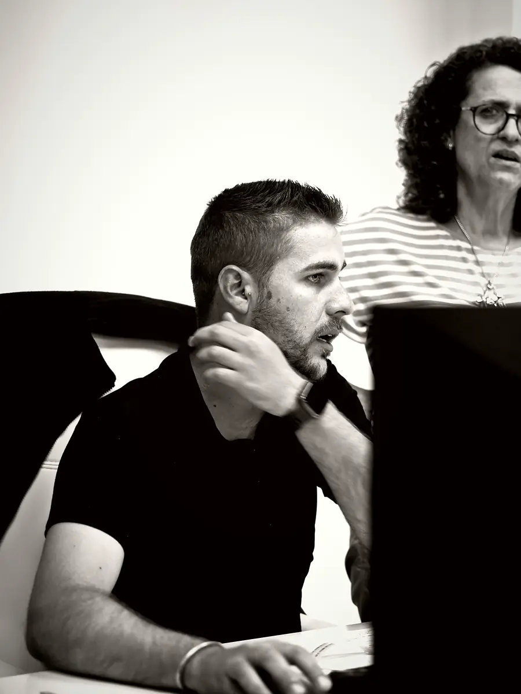
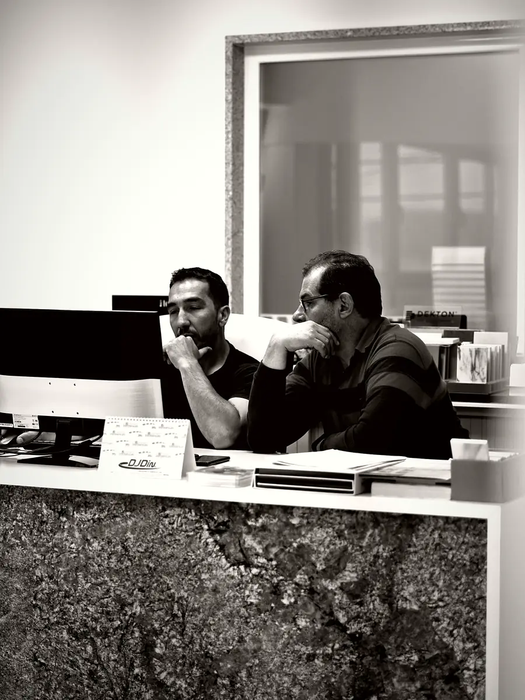
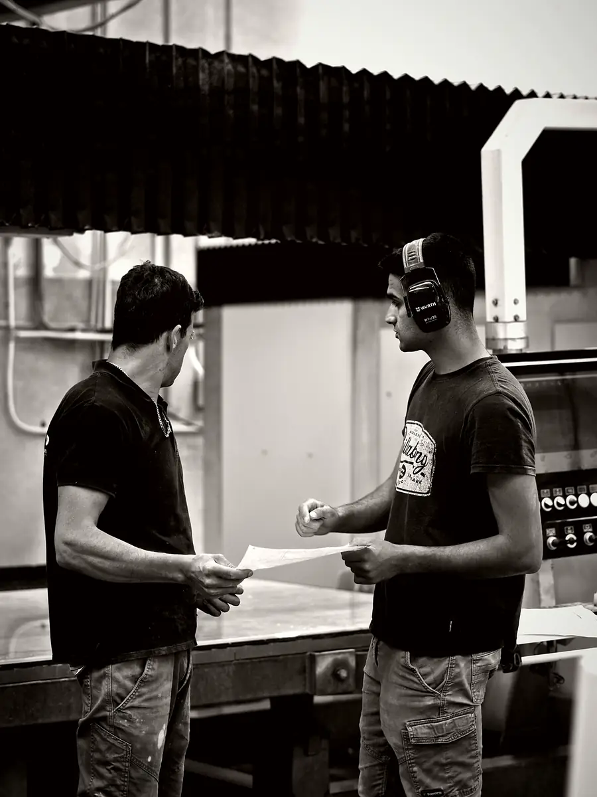

CB Prod · Mafra, Portugal
Getting an accurate manufacturing quote for your worktops
Your worktop manufacturing quote request is studied by our technical team, who send you a detailed, free proposal within 48 working hours. The more complete your file, the more accurate the price from the very first reply. Here is what to send us and what happens next, all the way to delivery.
What to send us
We manufacture from your information, so a precise file avoids back-and-forth and secures production. For each project, please send us:
- dimensioned drawings of every piece, with the final dimensions taken by you or your partners;
- any technical files you have, for example DXF, DWG or dimensioned PDF;
- the material, range and colour, or the options your client is choosing between;
- the thickness and finishes required: polished, matt or textured depending on the range;
- the type and profile of the edges, and which edges are visible;
- cut-outs: undermount or inset sink, hob, taps, sockets, with the appliance references;
- additional items: splashbacks, returns, upstands, vanity tops;
- the delivery address and any access or scheduling constraints.
What happens next
Your file then goes through six clear steps:
- study: our technical team checks that the drawings are consistent, prepares the cutting plan on the slabs and contacts you if anything is missing;
- quote: within 48 working hours you receive a detailed proposal covering material, thickness, finishes, cut-outs and delivery;
- approval: you confirm the order and the final drawings, which become the manufacturing reference;
- manufacturing: the pieces are CNC cut to a tenth of a millimetre and then finished by hand in our Mafra factory;
- inspection: dimensions, cut-outs, edges and surface appearance are checked before dispatch;
- delivery: the pieces are securely packed and delivered to the agreed address, in France, Portugal or internationally.
The manufacturing lead time depends on the material, slab availability and the complexity of the pieces: it is given to you with the quote.
The workshop in pictures

Studying drawings in the technical office 
The office at the factory entrance 
Reading the drawing before cutting
Your questions
Is the manufacturing quote free?
Yes. The study of your file and the priced proposal are free and commit you to nothing until you approve them. You can ask for alternatives to compare several materials, thicknesses or finishes and present them to your client. Manufacturing only starts once the order and the final drawings have been approved.
Who guarantees that the dimensions are correct?
The dimensions are taken by you or your partners, as CB Prod does not work on site. On our side, we check that the drawings received are consistent and flag any point that looks doubtful before pricing. Once the drawings are approved, we commit to manufacturing pieces that conform to them, inspected before dispatch.
Which file formats do you accept?
We work with the common formats used by design offices and kitchen design software, for example DXF, DWG or dimensioned PDF. A clear dimensioned drawing, even a simple one, is enough for an initial study. If you use another format, send it anyway: we will tell you whether we can use it or whether it needs exporting differently before pricing.
See also
Send us your drawings
Dimensioned drawings, technical files, material and finishes: we review your request and reply within 48 working hours.